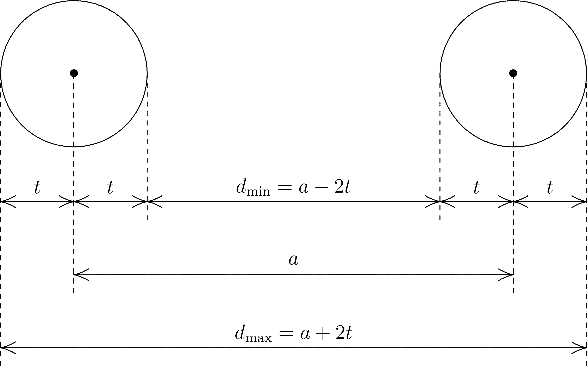

ORCA and Symmetry¶
For most of its life, ORCA did not take advantage of molecular symmetry.
Starting from version 2.8 (released in September 2010), there has been
at least limited use. On request (using the simple keyword ! UseSym
for instance, see below), the program detects the point group, orients
the molecule, cleans up the coordinates and produces symmetry-adapted
molecular orbitals.
For geometry and gradient cleanup, the full point group is taken into account. For the diagonalization of the geometric Hessian, all finite point groups that have real characters only are supported, namely \(C_i\), \(C_s\), \(C_2\), \(C_{2h}\), \(C_{nv}\), \(D_n\), \(D_{nh}\), \(D_{nd}\), \(T\), \(T_d\), \(O\), \(O_h\), \(I\), and \(I_h\) where \(n\ge 2\). For all other purposes such as the construction of symmetry-adapted molecular orbitals or to describe electronic states, only \(D_{2h}\) and subgroups are currently supported. Here the appropriate subgroup of \(D_{2h}\) (referred to as the reduced point group) is chosen automatically depending on the auto-detected or user-specified point group, and the use of symmetry helps to control the calculation and the interpretation of the results. Please note that at this point, the angular momentum quantum number \(\ell\) is still limited to \(\ell\le 8\) if symmetry is in use.
Getting started¶
Utilization of symmetry is turned on by the simple keyword UseSymmetry
(which may be abbreviated by UseSym), or if a %Symmetry (or %Sym)
input block is present in the input. ORCA will then automatically
determine the point group, reorient and center the molecule to align its
symmetry elements with the coordinate system, and replace the input
structure by a geometry that corresponds exactly to this point group and
which minimizes the sum of square distances between the atoms of both
structures.
Any program that attempts to find the point group of an arbitrary atom cluster must be prepared to cope with some amount of numerical noise in the atom coordinates. ORCA by default allows each atom to deviate at most \(10^{-4}\) atomic units from the ideal position that is consistent with the point group being examined. The rationale behind this value is the rounding error that occurs when the user feeds Cartesian coordinates with five significant digits after the decimal point into the program which otherwise represent an exact (symmetry-adapted) geometry. A threshold that is about one order of magnitude higher than the numerical noise in the coordinates is usually very safe.
If the maximum error in the Cartesian coordinates exceeds these \(10^{-4}\)
atomic units, the symmetry module in ORCA will fail to recognize the
expected point group. The user is strongly advised to always make sure
that the detected point group meets their expectations. If the point
group reported by the symmetry module appears to be too low, the user
may try to increase the detection threshold to \(10^{-3}\) or \(10^{-2}\)
Bohr radii using option SymThresh in the %Symmetry input block:
A great method to obtain a structure with perfect symmetry avoiding any
expensive calculation is to use the simple keywords ! NoIter XYZFile
with an appropriate threshold. The structure in the resulting file with
the extension .xyz may then be used as input for the actual calculation.
To give an illustrative example, coordinates for staggered ethane have been obtained by geometry optimization without using symmetry. If symmetry is turned on, point group \(C_i\) is recognized instead of the expected point group \(D_{3d}\) due to the remaining numerical noise. To counter this, the detection threshold is increased to \(10^{-2}\) a. u. and a coordinate file with perfect symmetry is produced by the following input:
If ORCA fails to find the expected point group even though a value of
\(10^{-2}\) atomic units has been selected for SymThresh, the user is
strongly advised to take a careful look at the structure by means of
their favorite visualization tool before increasing this value any further.
Look for any obvious distortions or even missing atoms. An especially
tricky point may be the orientation of methyl groups or the conformation
of floppy side chains. A small rotation about a single bond may be enough
to push some atom positions above the limit. If the conformational
deviations cannot be fixed using a molecular editor or modelling program,
a possible alternative may be to pre-optimize the structure without
symmetry using a less expensive method like PB86 and a small basis set
like def2-SVP. Even several passes of pre-optimization and structure
editing may be considered until all symmetry-equivalent side chains
are locked in the same conformation so that ORCA finally detects the
correct point group.
It is not recommended to run calculations using a value of SymThresh
which is much too high or much too small since this may result in some
really strange behavior of the symmetry module. Consider for instance
the following input file which contains a perfectly octahedral geometry
of a sulfur hexafluoride molecule. Its coordinates may be easily created
by hand by placing the sulfur atom into the origin and two fluorine atoms
on each coordinate axis at equal distances \(r\) from the origin (\(r=1.56\)
Å or approximately \(2.95\) atomic units). Using a value for SymThresh
as large as \(0.1\) Bohr radii works fine in this case, resulting in the correct
point group O\(_h\).
8 structure (0 1) C -0.002822 -0.005082 -0.001782 C -0.723141 -1.252323 -0.511551 H 0.017157 0.029421 1.100049 H 1.042121 0.030085 -0.350586 H -0.495109 0.917401 -0.350838 H -0.743120 -1.286826 -1.613382 H -0.230855 -2.174806 -0.162495 H -1.768085 -1.287489 -0.162747
! RHF SVP NoIter XYZfile %sym SymThresh 1.0e-2 end *xyz 0 1 C -0.002822 -0.005082 -0.001782 C -0.723141 -1.252323 -0.511551 H 0.017157 0.029421 1.100049 H 1.042121 0.030085 -0.350586 H -0.495109 0.917401 -0.350838 H -0.743120 -1.286826 -1.613382 H -0.230855 -2.174806 -0.162495 H -1.768085 -1.287489 -0.162747 *
However, if SymThresh is increased further to \(t=0.5\) atomic units, the
point group detection algorithm breaks down (strange warnings are printed
as a consequence) and the reported point group decreases to C\(_i\) (in which
the center of inversion is the only non-trivial symmetry element). This is
because the center of inversion is easy to detect and this is done by one
of the early checks. The breakdown of the point group recognition may be
explained as follows. During the process of point group detection the
symmetry module is of course unaware that the given input geometry is exact.
Hence it will be treated as any other input structure. A value of \(t=0.5\)
Bohr radii for SymThresh means that the unknown exact atom position is
located within a sphere of radius \(t=0.5\) atomic units around the input atom
position. The input distance \(a=\sqrt{2}\,r\) between two adjacent fluorine
atoms is approximately \(a\approx 2.21\) Å \(\approx 4.17\) a. u., so
their unknown exact distance \(d\) may vary in the following interval
(see the diagram in fig:symthresh):
Analogously, the unknown exact distance \(d'\) between two opposite fluorine atoms with the input distance \(a'=2r=5.90\) a. u. is:
Since the possible intervals of \(d\) and \(d'\) overlap (due to \(d_{\rm max}>d'_{\rm min}\)), all fifteen F--F distances are considered equal. Since there is no solid with six vertices and fifteen equal inter-vertex distances in three dimensions, the point group detection algorithm fails.

The relation between the value \(t\) of SymThresh, the distance \(a\) of some
input atom pair, and the allowed interval \([d_{\rm min},d_{\rm max}]\) for the
distance \(d\) between the exact atom positions. This interval has the width
\(d_{\rm max}-d_{\rm min}=4t\).
Geometry optimizations using symmetry¶
If a geometry optimization is performed with symmetry turned on, ORCA
will first determine the point group of the starting structure and
replace the geometry that is presumed to contain numerical noise with one
that has perfect symmetry. Starting with ORCA 6, the optimizer will clean
up the gradient at every step of the optimization if requested by setting
option CleanUpGradient true in the %Symmetry input block. The gradient
cleanup is done by projecting out all components that are not totally
symmetric. This way the symmetry of the molecule cannot decrease during
the optimization.
Since ORCA 6.1.1, the settings SymRelaxOpt false and CleanUpGradient true
represent the default. The reason is that during a geometry optimization,
ORCA by its design cannot handle a rotation of the molecule during the
optimization which would be needed to align the changed symmetry elements
with the coordinate axes. Option SymRelaxOpt will be removed for good
in the next major or minor release.
The following table summarizes the behaviour of the optimizer depending
on the options SymRelaxOpt and CleanUpGradient:
SymRelaxOpt |
CleanUpGradient |
Behaviour |
|---|---|---|
false |
true |
Symmetry will be frozen (the new default). |
false |
false |
Setting is not recommended. |
true |
true |
Symmetry may increase but not decrease (may not work). |
true |
false |
Symmetry may change freely (may not work). |
Setting both switches false would allow the symmetry of the molecule
to change when the geometry is updated in each step of the optimization,
but this change would be immediately undone when symmetrizing the
coordinates because the point group is not allowed to change.
Therefore this setting is not recommended.
Diagonalization of the geometric Hessian using symmetry¶
Since version 6.0, ORCA is able to diagonalize the geometric Hessian with symmetry if both frequencies and symmetry have been requested by the user and the auto-detected or user-specified point group is finite and has real characters only. These are the point groups \(C_i\), \(C_s\), \(C_2\), \(C_{2h}\), \(C_{nv}\), \(D_n\), \(D_{nh}\), \(D_{nd}\), \(T\), \(T_d\), \(O\), \(O_h\), \(I\), and \(I_h\) where \(n\ge 2\).
For this purpose, the Hessian in mass-weighted Cartesians is transformed block-wise into the symmetry-adapted displacement basis. Since all components of a degenerate irreducible representation give rise to identical blocks except for numerical noise, the block is averaged over the components and only one diagonalization per irrep is performed. Thus the vibrational frequencies for a degenerate level are exactly identical. The components of a degenerate level are indexed starting with 0, and the index is given in parentheses after the Mulliken symbol specifying the irreducible representation.
Default alignment of the symmetry elements with the coordinate system¶
If ORCA determines the point group of a molecule and the user has not selected any special options, the following principles apply to the manner in which the symmetry elements of the full point group are aligned with the coordinate system:
-
The center of mass of the molecule will be shifted into the origin by default.1 If the point group leaves one unique vertex invariant to all symmetry operations, the center of mass agrees with this vertex. This is the case for all point groups except \(C_s\), \(C_n\) \((n\ge 1)\), \(C_{nv}\) \((n\ge 2)\), and \(C_{\in fty v}\).
-
If the molecule exhibits a unique axis of symmetry with the highest number of positions, this axis will become the \(z\) axis. This applies to all point groups except \(C_1\), \(C_i\), \(C_s\), \(D_2\), \(D_{2h}\), the cubic point groups, and \(K_h\).
-
For point group \(C_s\), the mirror plane will become the \(xy\) plane.
-
For point groups \(C_{nv}\) \((n\ge 2)\), one of the vertical mirror planes will become the \(xz\) plane.
-
For point groups \(D_n\) \((n\ge 3)\), \(D_{nh}\) \((n\ge 3)\), and \(D_{nd}\) \((n\ge 2)\), one of the two-fold rotation axes perpendicular to the axis with the highest number of positions will become the \(x\) axis.
-
For point groups \(D_2\), \(D_{2h}\), \(T\), and \(T_h\), the three mutually orthogonal \(C_2\) axes will become the coordinate axes.
-
For point groups \(T_d\), \(O\), and \(O_h\), the three mutually orthogonal four-fold rotation or rotation-reflection axes will become the coordinate axes.
-
Finally, for point groups \(I\) and \(I_h\), one of the five sets of three mutually orthogonal \(C_2\) axes will become the coordinate axes. The pair of \(C_5\) or \(S_{10}\) axes closest to the \(z\) axis will be located in the \(yz\) plane.
-
In general the orientation of the molecule will be changed as little as possible to meet the criteria above. If the input geometry meets these criteria already, the molecule will not be moved or rotated at all.
If the point group of the system is \(D_{nd}\) with \(n\ge 2\) or \(T_d\) and
the user has selected subgroup \(C_{2v}\) using option PreferC2v, the
following rules apply instead:
-
For point group \(D_{nd}\) with \(n\ge 2\), one of the diagonal mirror planes will become the \(xz\) plane.
-
For point group \(T_d\), one of the diagonal mirror planes containing the \(z\) axis will become the \(xz\) plane, i. e. the molecule will be rotated by 45 degrees about the \(z\) axis compared to the default orientation.
table:subgroups gives an overview over all point groups and the way in which the symmetry elements of the reduced point group (the largest common subgroup of \(D_{2h}\)) are aligned with the coordinate system.
Point groups and corresponding subgroups suitable for electronic-structure calculations.
| Full point group |
Index \(n\) |
Unique center2 |
Consistent with planar molecule3 |
Chosen subgroup |
Alignment of the subgroup4 |
|---|---|---|---|---|---|
| \(C_1\) | no | no | \(C_1\) | ||
| \(C_i\) | \(i\) | no | \(C_i\) | ||
| \(C_s\) | no | yes | \(C_s\) | ||
| \(C_n\) | odd | no | no | \(C_1\) | |
| even | no | no | \(C_2\) | \(z\) axis | |
| \(C_{nv}\) | odd | no | no | \(C_s\) | \(xz\) plane |
| even | no | for \(n=2\) | \(C_{2v}\) | \(z\), \(xz\), \(yz\) | |
| \(C_{nh}\) | odd | yes | yes | \(C_s\) | \(xy\) plane |
| even | \(i\) | yes | \(C_{2h}\) | \(z\), \(xy\) | |
| \(D_n\) | odd | yes | no | \(C_2\) | \(x\) axis |
| even | yes | no | \(D_2\) | ||
| \(D_{nh}\) | odd | yes | yes | \(C_{2v}\) | \(x\), \(xy\), \(xz\) |
| even | \(i\) | yes | \(D_{2h}\) | ||
| \(D_{nd}\) | odd | \(i\) | no | \(C_{2h}\) | \(x\), \(yz\) |
| even | yes | no | \(D_2\) | ||
| \(C_{2v}\) | \(z\), \(xz\), \(yz\) | ||||
| \(S_{2n}\) | odd | \(i\) | no | \(C_i\) | |
| even | yes | no | \(C_2\) | \(z\) axis | |
| \(T\) | yes | no | \(D_2\) | ||
| \(T_h\) | \(i\) | no | \(D_{2h}\) | ||
| \(T_d\) | yes | no | \(D_2\) | ||
| \(C_{2v}\) | \(z\), \(xz\), \(yz\) | ||||
| \(O\) | yes | no | \(D_2\) | ||
| \(O_h\) | \(i\) | no | \(D_{2h}\) | ||
| \(I\) | yes | no | \(D_2\) | ||
| \(I_h\) | \(i\) | no | \(D_{2h}\) | ||
| \(C_{\in fty v}\) | no | no | \(C_{2v}\) | \(z\), \(xz\), \(yz\) | |
| \(D_{\in fty h}\) | \(i\) | no | \(D_{2h}\) | ||
| \(K_h\) | \(i\) | no | \(D_{2h}\) |
Irreducible representations of \(D_{2h}\) and subgroups¶
table:species_table_c2v, table:species_table_d2, and table:species_table_d2h contain lists of the irreducible representations (also called species) and the corresponding characters of the point groups supported for electronic structure calculations in ORCA, and the product tables of these irreducible representations. Where the data depends on the alignment of the symmetry elements with the coordinate system, Mulliken's recommendations mulliken1955sym are followed. This approach is in line with the recommendations by the IUPAC schutte1997sym.
Species and species product table of point group \(C_{2v}\). The species table for \(C_{2v}\) corresponds to Table III in mulliken1955sym. The directions of the two-fold axis and the mirror planes in each column are related to each other by cyclic permutations.
Species and species product table of point group \(D_2\). The species table for \(D_2\) has been obtained by dropping the center of inversion and the mirror planes from the species table for \(D_{2h}\) (see table:species_table_d2h).
Species and species product table of point group \(D_{2h}\). The species table for \(D_{2h}\) corresponds to Table IV in mulliken1955sym.
Options available in the %Symmetry input block¶
table:symmetry_block_options contains a list of the options
available in the %Symmetry (or %Sym) input block. Options
SymThresh and SymRelax (same as SymRelaxSCF below) can also be
accessed in the %Method input block for backward compatibility. This
use is deprecated and not recommended in new input files, however.
List of options in the %Symmetry (%Sym) input block
| Option | Type | Default | Description |
|---|---|---|---|
UseSymmetry |
Boolean | True |
By setting this option to False, symmetry may be switched off even though the %Symmetry block is present in the input file. |
UseSym |
Boolean | True |
Same as UseSymmetry. |
SymThresh |
Real | \(10^{-4}\) | Two vertices with a distance shorter than this threshold (in atomic units) are considered identical during point group recognition. |
PreferC2v |
Boolean | False |
Indicates whether to prefer subgroup \(C_{2v}\) over \(D_2\) for electronic-structure calculations where both choices are appropriate (point groups \(D_{nd}\) with odd \(n\) and \(T_d\)). |
PointGroup |
String | Empty string | If the user specifies a point group using this option, point group recognition will be skipped and the user must make sure that the molecule is oriented in the coordinate system in agreement with the conventions in symmetry.default_alignment. Note that the point group label must be enclosed in double quotes. Otherwise ORCA will complain about an invalid assignment. |
SymRelaxSCF |
Boolean | False |
Indicates whether orbital occupation numbers of each irreducible representation are allowed to change during SCF. |
SymRelaxOpt |
Boolean | False |
Indicates whether the point group will be determined from scratch in every step of a geometry optimization. Using the new default value of False, the initial point group will be imposed at every step no matter how far the distances between the current and the ideal structure exceed SymThresh. A value of True will allow the point group to change in an arbitrary manner, but ORCA by its design cannot handle a rotation of the molecule under these circumstances which would be needed to align the changed symmetry elements with the coordinate axes, so this setting may not work. This option will be removed for good in the next major or minor release. |
CleanUpCoords |
Boolean | True |
Determines whether the molecular geometry will be cleaned up using the automatically detected or user-specified point group. Even if CleanUpCoords is False, symmetrized coordinates will still be computed temporarily and a warning will be printed if the largest deviation from the original geometry exceeds SymThresh. |
CleanUpGeom |
Boolean | True |
Same as CleanUpCoords. |
CleanUpGrad |
Boolean | True |
Indicates whether the full point group of the molecule shall be used to remove all non-totally symmetric components from the gradient. This ensures that the point group will not decrease throughout the optimization. |
CleanUpGradient |
Boolean | True |
Same as CleanUpGrad. |
Print |
Integer | 1 | Determines the output size for symmetry handling in general and point group detection in particular; 0 -- No output during point group detection; 1 -- Normal output; 2 -- Detailed information; 3 -- Debug print. |
PrtSALC |
Integer | 0 | Specifies the output size for the construction of symmetry-adapted linear combinations (SALCs) of atomic orbitals; 0 -- No output for symmetry-adapted orbitals; 1 -- Normal output; 2 -- Detailed information (e. g. the SALCs themselves); 3 -- Debug print. |
-
In the very special case that the Z matrix contains no atoms with mass, the geometric center will be used instead. ↩
-
A center of inversion is denoted \(i\). "yes" indicates the existence of a unique vertex that remains invariant to all symmetry operations of the point group. ↩
-
This column indicates whether the given point group may be the full point group of a planar molecule. ↩
-
This column contains the elements (axes or planes) of the coordinate system that coincide with the symmetry elements of the reduced point group (the largest common subgroup of the full point group and \(D_{2h}\)) by default. If the full point group contains a unique principle axis of symmetry (with the highest number of positions), this axis is presumed to coincide with the \(z\) axis. ↩